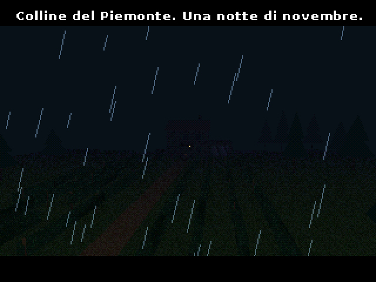
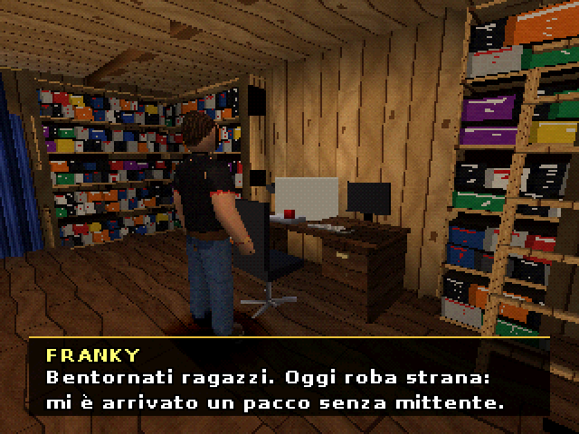
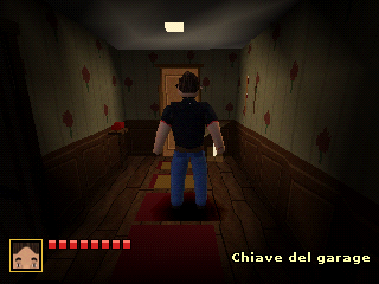
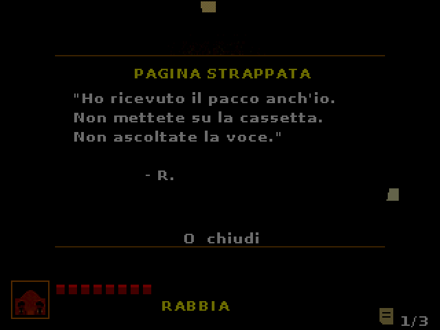
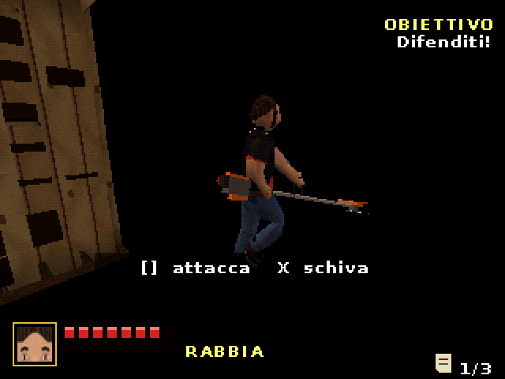
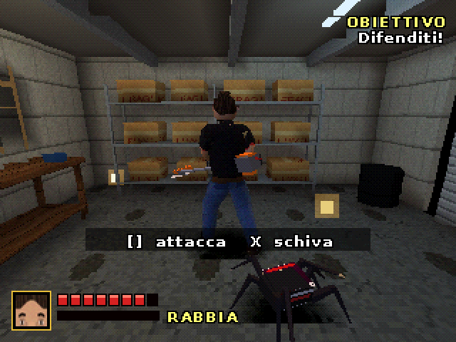
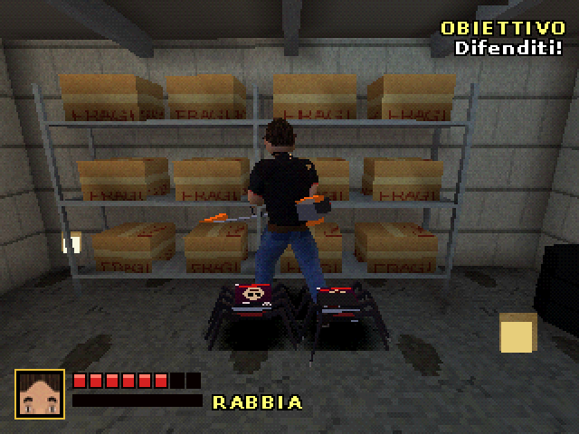
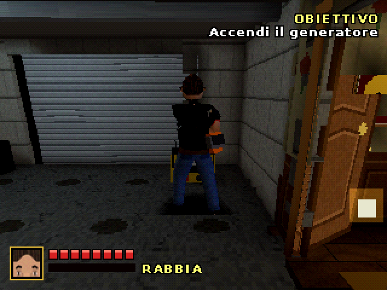
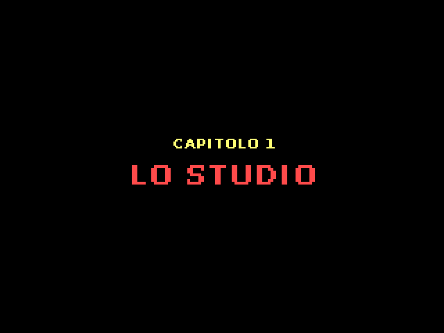

LA STORIA
Franky non dà voti. Mai. Ma stanotte qualcosa nella sua collezione vuole una recensione a tutti i costi. Salta la luce, la casa si chiude, gli scaffali si muovono. Con una torcia in mano e un decespugliatore trovato in garage, Franky deve arrivare all'alba.
SCREENSHOT









COMANDI
Croce direzionale / analogico | muoviti |
□ | attacco (□□□ combo) |
△ | mossa speciale dell'arma |
× | schivata / avanti nei dialoghi |
○ | interagisci |
R1 | aggancia il nemico |
L1 | attacco Rabbia |
L2 / R2 | ruota la telecamera |
COME SI GIOCA
- Estrai lo zip e apri FRC.cue (non il .bin) con DuckStation, ePSXe, PCSX-Redux o Mednafen. Serve il .cue per sentire la musica.
- Su console vera: masterizza il .cue su CD-R a bassa velocità (serve una PS1 modificata).
- Arena in due: collega il secondo controller e premi START nella selezione personaggi.
Questa è una demo: c'è il capitolo 1, "Lo Studio", più l'arena. Gli altri capitoli sono in lavorazione.